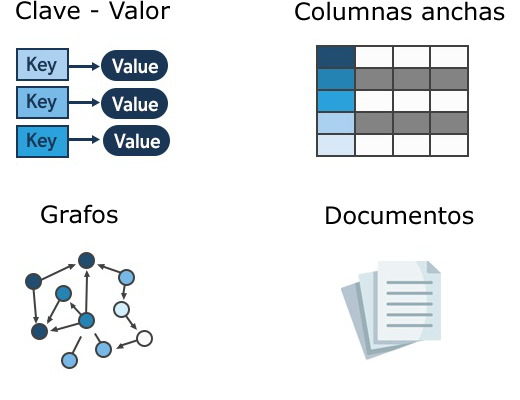

Tipos de Bases de Datos NoSQL
Almacenes de Documentos

Ejemplos: MongoDB, Couchbase, Firebase Firestore.
Características: Almacenan datos en documentos similares a JSON, lo que permite una estructura flexible y anidada. Cada documento puede contener diferentes campos y tamaños de datos.
Uso Común: Adecuado para aplicaciones web y móviles, especialmente cuando se necesita manejar datos no estructurados o semi-estructurados.
Bases de Datos Clave-Valor

Ejemplos: Redis, DynamoDB, Riak.
Características: Almacenan datos en pares clave-valor, donde cada valor está asociado con una clave única. Son rápidas y eficientes para operaciones de lectura y escritura simples.
Uso Común: Caché de datos, sesiones de usuario, sistemas de colas.
Almacenes de Columnas

Ejemplos: Apache Cassandra, HBase, Vertica.
Características: Almacenan datos en columnas en lugar de filas, lo que permite una recuperación eficiente de datos específicos. Son ideales para aplicaciones que requieren análisis de datos a gran escala.
Uso Común: Análisis de big data, sistemas de almacenamiento de registros.
Bases de Datos de Grafos

Ejemplos: Neo4j, Amazon Neptune, ArangoDB.
Características: Modelan datos como nodos (entidades) y bordes (relaciones) entre ellos. Son eficientes para consultas que involucran relaciones complejas.
Uso Común: Redes sociales, recomendaciones personalizadas, análisis de redes.